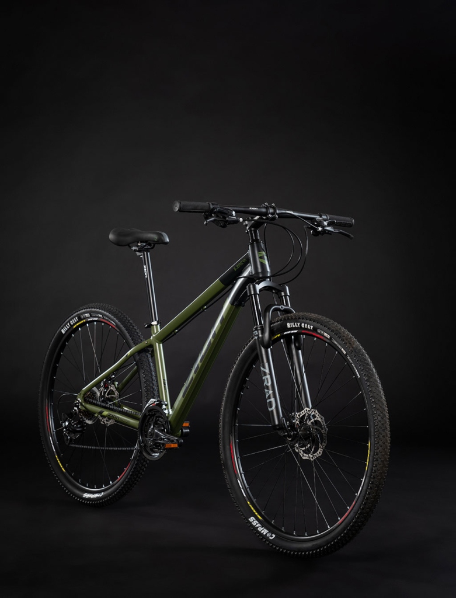
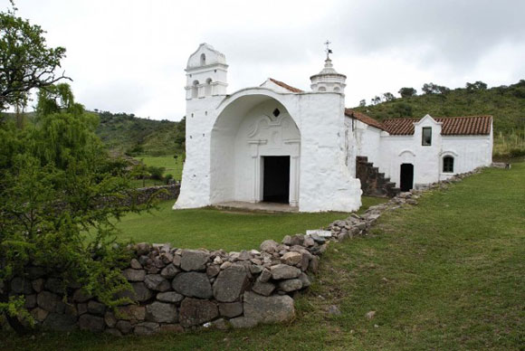
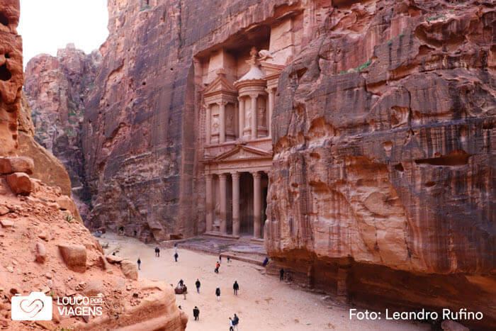

Por que usar la bici
La bicicleta tiene muchos beneficios, ya que aumenta la actividad física y reduce, por ejemplo, la mortalidad prematura, las enfermedades cardiovasculares y el riesgo de cáncer; combina el transporte con el gimnasio (al que mucha gente no tiene tiempo de ir), no causa contaminación atmosférica ni acústica, emite cero CO2, utiliza mucho menos espacio que el coche y las personas que se desplazan en bicicleta suelen declararse más felices que aquellas que usan otros medios de transporte.

Asimismo, en un momento en el que muchas personas tienen sobrepeso u obesidad, la bicicleta es una excelente manera de perder kilos. Varios estudios han demostrado que las personas que se mueven en bicicleta pesan menos que las que se desplazan en coche o que las personas que pasan del coche a la bicicleta pierden peso.
Ultimo lugar que fui

Vale la pena, una y mil veces, visitar esta pequeña iglesia que está cargada de historia y se enmarca en un paisaje increíble, sobre todo en primavera o verano. Te recomiendo ir temprano y llegar antes del mediodía para disfrutar de la jornada completa con alguna caminata por el lugar y su entorno.
Es uno de esos destinos para repetir. Por su encanto y fácil acceso desde la ciudad. Se encuentra por Autovía E53 a solo 40 kilómetros del Aeropuerto Ingeniero Taravella de Córdoba ciudad. Es bueno decir, que los últimos 10 km son de tierra y se deben transitar con mucho cuidado.
Esta centenaria Capilla se encuentra bajo la advocación de Nuestra Señora del Rosario. La construcción data del año 1730 y originariamente funcionó como el oratorio de la Estancia Santa Gertrudis, que trabajaba en el envío de mulas al Alto Perú. De allí que la palabra Candonga signifique “mula de tiro” por haber funcionado como refugio de mulas con destino a Potosí.
Que me gustaria conocer
El sitio arqueológico de Petra se encuentra en la ciudad de Wadi Musa, Jordania, a unos 250 km de la capital Ammán. Inicialmente estuvo ocupada por edomitas y posteriormente construida por nabateos. Los edificios fueron tallados en la roca arenisca , por esta razón, su color varía entre el beige y el rosa, lo que terminó por darle al lugar el nombre en clave de Ciudad Rosa .
Petra era la principal ruta comercial entre la Península Arábiga y Siria, por lo que es posible encontrar muchos elementos que hacen referencia a las caravanas comerciales, ya sea en esculturas o en las costumbres de los beduinos locales. ¿Qué productos circulaban por aquí? Seda, incienso y especias.
Petra sufrió dos grandes terremotos que la destruyeron, uno de ellos en el año 551, quedando sólo sus ruinas actuales, descubiertas en 1812 por el explorador suizo Johann Ludwig Burckhardt.
El lugar es tan espléndido que, en 1985, fue reconocido por la UNESCO como Patrimonio de la Humanidad . Es curioso: ¡¿qué extraordinario debió ser este lugar antes de dos terremotos?.
